This is a diverging lollipop function. Lollipop chart conveys the same information as bar chart and diverging bar. Except that it looks more modern. Instead of geom_bar, I use geom_point and geom_segment to get the lollipops right. Let’s draw a lollipop using the same data I prepared in the previous example of diverging bars.
Usage
diverging_lollipop_plt(
.data,
.x_axis,
.y_axis,
.plot_title = NULL,
.plot_subtitle = NULL,
.plot_caption = NULL,
.interactive = FALSE
)Arguments
- .data
The data to pass to the function, must be a tibble/data.frame.
- .x_axis
The data that is passed to the x-axis. This will also be the
xandxendparameters of thegeom_segment- .y_axis
The data that is passed to the y-axis. This will also equal the parameters of
yendandlabel- .plot_title
Default is NULL
- .plot_subtitle
Default is NULL
- .plot_caption
Default is NULL
- .interactive
Default is FALSE. TRUE returns a plotly plot
Examples
suppressPackageStartupMessages(library(ggplot2))
data("mtcars")
mtcars$car_name <- rownames(mtcars)
mtcars$mpg_z <- round((mtcars$mpg - mean(mtcars$mpg))/sd(mtcars$mpg), 2)
mtcars$mpg_type <- ifelse(mtcars$mpg_z < 0, "below", "above")
mtcars <- mtcars[order(mtcars$mpg_z), ] # sort
mtcars$car_name <- factor(mtcars$car_name, levels = mtcars$car_name)
diverging_lollipop_plt(.data = mtcars, .x_axis = car_name
, .y_axis = mpg_z)
